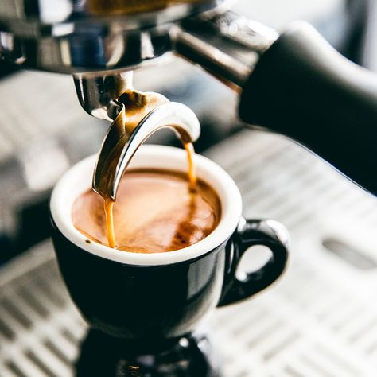
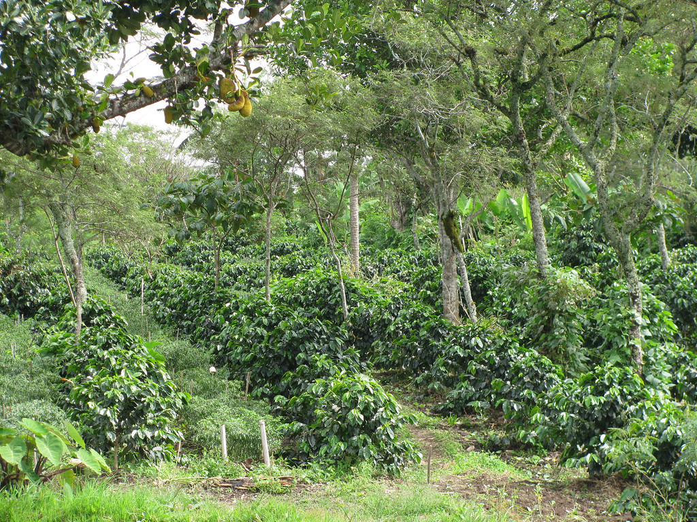
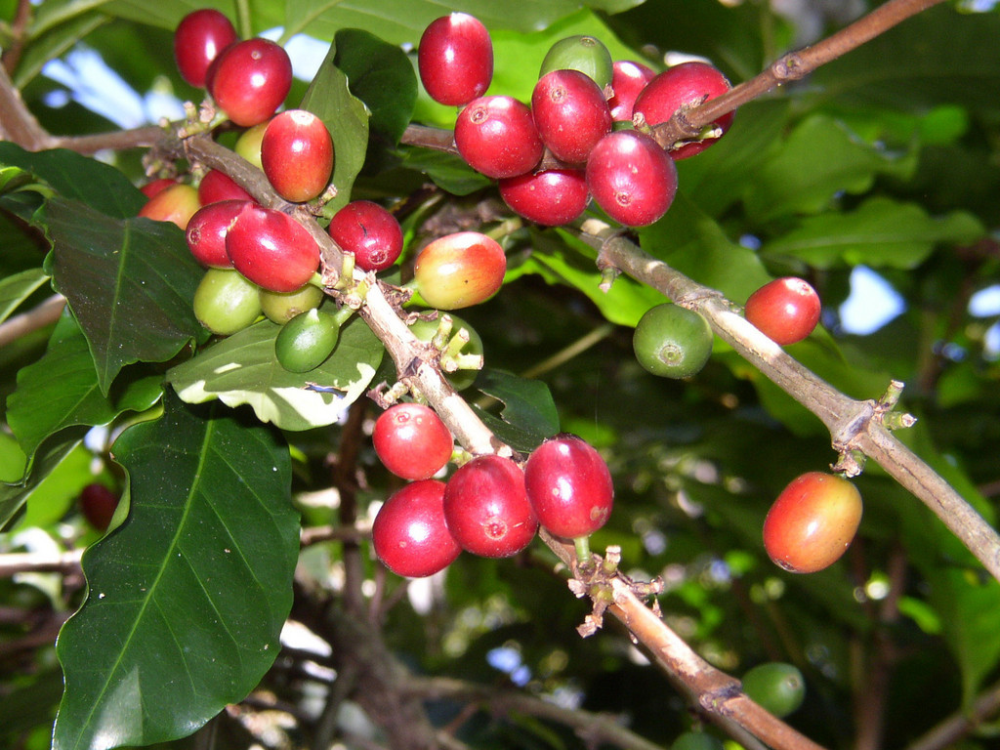
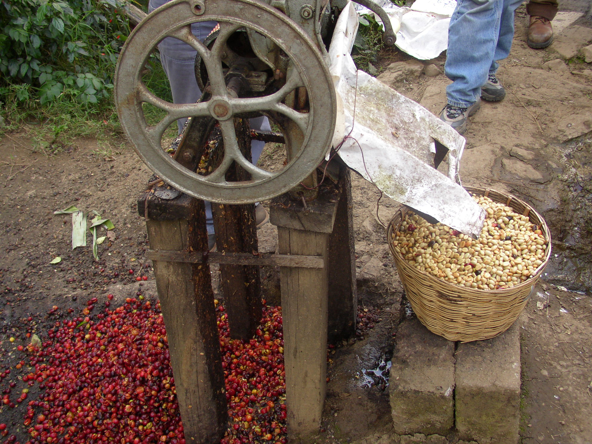
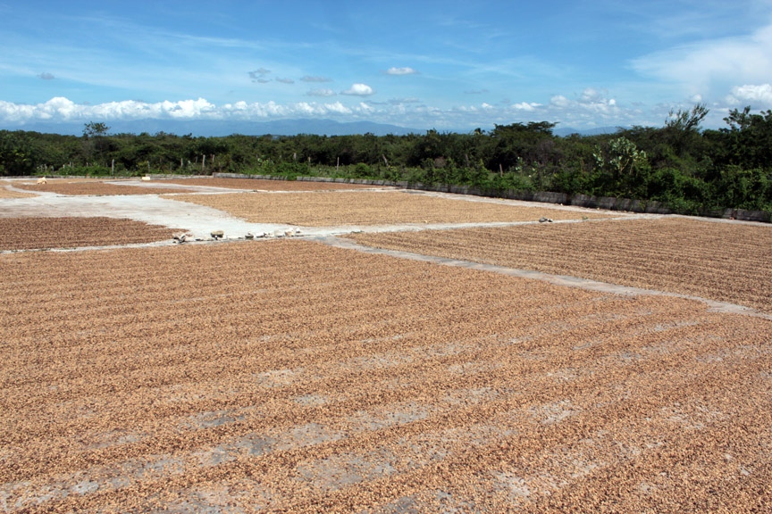
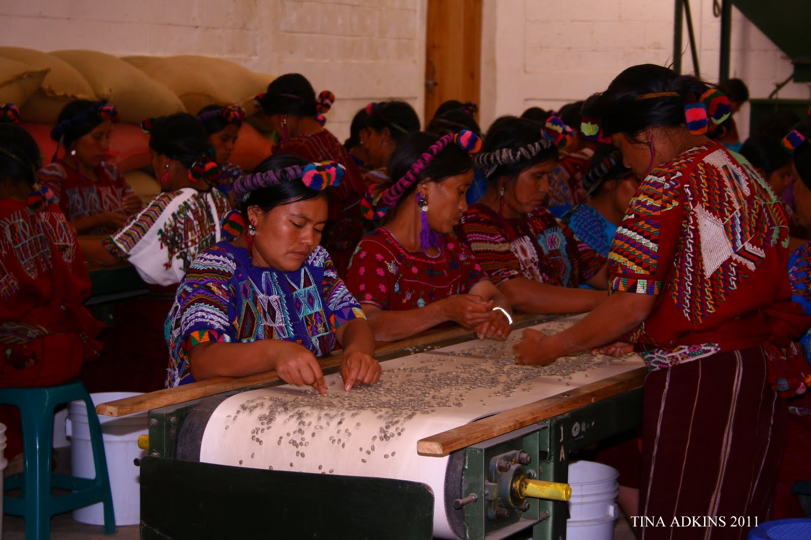

Billions of cups of coffee are consumed every day all across the world. You likely already have a connection to coffee; it means something to you and your morning (or afternoon) routine. The experience can be both personal and communal: it can mean a moment of pure, solitary peace before the daily rat race begins or it can be a midday break with a good friend at the corner cafe. Enjoying a good cup of coffee is one of those simple but vital pleasures of life. But like so many simple things, the story behind the final experience is far more complex and intriguing than it would seem at first glance (or sip, as it were.) A myriad of steps and processes go into the final cup. You can learn more about all these steps below...
Coffee grows in countries around the equator (hence, one reason for our name). There are two species of coffee: the famous (and highly marketed) Arabica and the lesser known but widely used Robusta. While Robusta coffee can grow in lowlands (à la Vietnam) and in direct sunlight, its finer, more delicate (and higher quality) cousin, Arabica, likes wet, sunny highlands. It grows best somewhere between 800-2000 meters above sea level, often on steep inclines (making the farming a whole lot more challenging), and under the canopy of big, leafy trees. “Shade-grown coffee”, now a market buzzword, is pretty much an observational comment. That’s how coffee grows naturally anyhow.
Many of the farms where coffee comes from are remote, at least a day’s worth of travel (assuming you’re going by motor vehicle - by donkey is another story!) from any major urban centre. Once processed, the coffee has to make its way to these cities - by back, donkey, or truck, which is the start of the export journey.
Coffee grows in countries around the equator (hence, one reason for our name). There are two species of coffee: the famous (and highly marketed) Arabica and the lesser known but widely used Robusta. While Robusta coffee can grow in lowlands (à la Vietnam) and in direct sunlight, its finer, more delicate (and higher quality) cousin, Arabica, likes wet, sunny highlands. It grows best somewhere between 800-2000 meters above sea level, often on steep inclines (making the farming a whole lot more challenging), and under the canopy of big, leafy trees. “Shade-grown coffee”, now a market buzzword, is pretty much an observational comment. That’s how coffee grows naturally anyhow.
Many of the farms where coffee comes from are remote, at least a day’s worth of travel (assuming you’re going by motor vehicle - by donkey is another story!) from any major urban centre. Once processed, the coffee has to make its way to these cities - by back, donkey, or truck, which is the start of the export journey.

After being picked, the cherries’ pulp is removed, revealing two small, slimy beans. They sit and ferment (allowing flavours to develop and sugars to excrete) for a couple of days, after which they are washed and laid out to dry on a patio, a raised bed, or the side of the road depending on where you are!

Once the beans are dry, which can take ten to fourteen days or more depending on weather patterns, they are called “parchment”; the hull of the bean is intact and must be removed. So yet another process begins: hulling, sorting, sizing, cleaning, and then a final sort by the human eye and the human hand.

Coffee production is not for the faint of heart. It is a long, laborious process and one that without a doubt deserves better compensation for those who do it. Seeing it first-hand makes you wonder how it is that we pay so little for something that requires so much work. Equator believes farmers should get more for their work. That’s why we source the way we do.